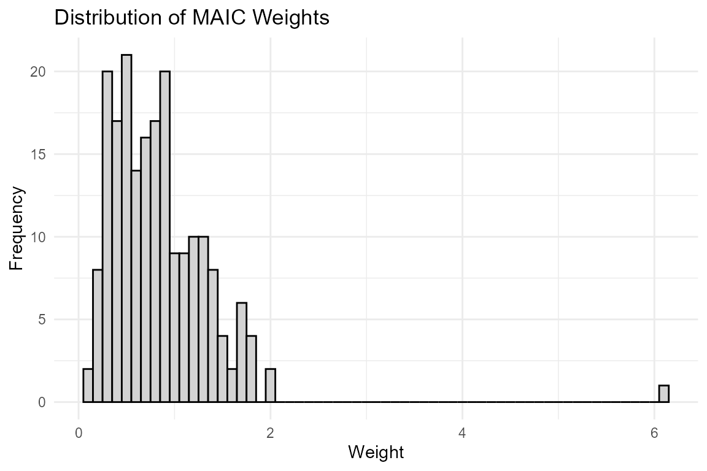
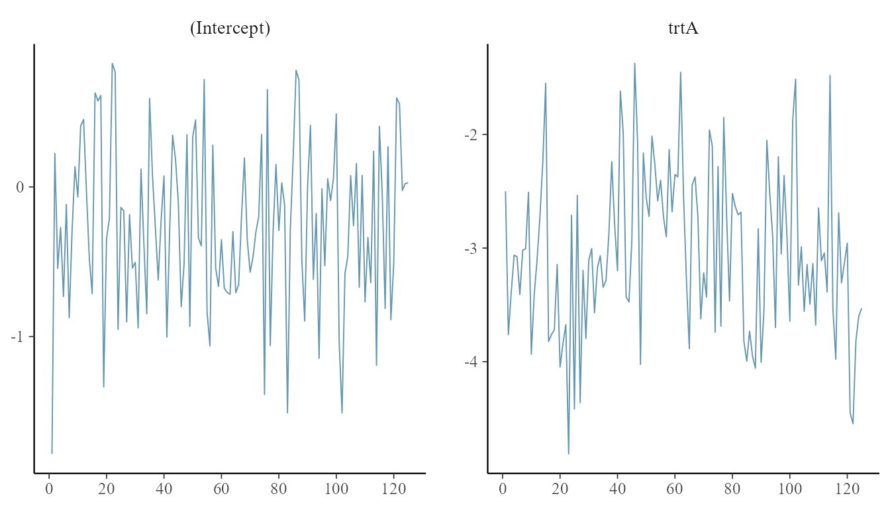

Advanced Features: Diagnostics and Uncertainty Quantification
Source:vignettes/diagnostics_and_uncertainty.Rmd
diagnostics_and_uncertainty.RmdIntroduction
This vignette demonstrates how to access model diagnostics, check weight distributions, and perform robust variance estimation using the objects returned by outstandR.
First, let’s load the packages and prepare the data and models that we will use throughout the examples.
library(outstandR)
library(ggplot2)
data(AC_IPD_binY_contX) # A vs C IPD
data(BC_ALD_binY_contX) # B vs C ALD
# Formulas
lin_form_contX <- as.formula("y ~ PF_cont_1 + PF_cont_2 + trt + trt:EM_cont_1 + trt:EM_cont_2")
bal_form_contX <- as.formula("~ EM_cont_1 + EM_cont_2")1. Robust Variance Estimation
Standard errors in population-adjusted analyses can be sensitive to model misspecification. outstandR supports robust (sandwich) standard errors for MAIC and ML-based G-computation.
Variance is approximated using the delta method:
To use this, set var_method = "sandwich" in your outstandR() call:
stc_robust <- outstandR(
ipd_trial = AC_IPD_binY_contX,
ald_trial = BC_ALD_binY_contX,
strategy = strategy_gcomp_ml(
formula = list(outcome_model = lin_form_contX),
family = binomial()),
seed = 12345,
var_method = "sandwich"
)
print(stc_robust)
#> Object of class 'outstandR'
#> ITC algorithm: GCOMP_ML
#> Model: binomial
#> Scale: log_odds
#> Common treatment: C
#> Individual patient data study: A vs C
#> Aggregate level data study: B vs C
#> Confidence interval level: 0.95
#>
#> Contrasts:
#>
#> # A tibble: 3 × 5
#> Treatments Estimate Std.Error lower.0.95 upper.0.95
#> <chr> <dbl> <dbl> <dbl> <dbl>
#> 1 AB 0.748 0.228 -0.187 1.68
#> 2 AC -0.696 0.126 -1.39 -0.00128
#> 3 BC -1.44 0.102 -2.07 -0.817
#>
#> Absolute:
#>
#> # A tibble: 3 × 5
#> Treatments Estimate Std.Error lower.0.95 upper.0.95
#> <chr> <dbl> <dbl> <dbl> <dbl>
#> 1 A 0.293 0.00285 0.188 0.398
#> 2 B -0.993 0.107 -1.63 -0.351
#> 3 C 0.451 0.00489 0.314 0.5882. Model Diagnostics
outstandR returns detailed model artifacts to facilitate diagnostics.
MAIC Weight Diagnostics
For MAIC, you can extract the calculated weights to check for extreme outliers and view the Effective Sample Size (ESS). First, we run the MAIC model:
outstandR_maic <- outstandR(
ipd_trial = AC_IPD_binY_contX,
ald_trial = BC_ALD_binY_contX,
strategy = strategy_maic(
formula = list(outcome_model = formula("y ~ trt"),
balance_model = bal_form_contX),
family = binomial(link = "logit")),
seed = 12345
)We can inspect the Effective Sample Size (ESS) to assess if we have suffered a severe loss of power due to matching:
# Check Effective Sample Size
print(outstandR_maic$model$ESS)
#> ESS
#> 136.8594Next, we can plot a histogram of the weights to check for extreme or dominant weights:
# Plot a histogram of weights
ggplot(data.frame(weights = outstandR_maic$model$weights), aes(x = weights)) +
geom_histogram(binwidth = 0.1, color = "black", fill = "lightgray") +
theme_minimal() +
labs(title = "Distribution of MAIC Weights", x = "Weight", y = "Frequency")
Bayesian MCMC Diagnostics
For Bayesian G-computation and MIM, the underlying stanfit object is retained in the output. First, let’s fit the Bayesian G-computation strategy:
outstandR_gcomp_bayes <- outstandR(
ipd_trial = AC_IPD_binY_contX,
ald_trial = BC_ALD_binY_contX,
strategy = strategy_gcomp_bayes(
formula = list(outcome_model = lin_form_contX),
family = binomial(link = "logit")),
seed = 12345,
iter = 250,
chains = 1,
refresh = 0
)We can extract the fit and pass it to packages like bayesplot (if installed) or use rstanarm’s built-in plotting to assess MCMC convergence:
library(bayesplot)
stan_obj <- outstandR_gcomp_bayes$model$fit
mcmc_trace(stan_obj, pars = c("(Intercept)", "trtA"))
If bayesplot is not available, standard convergence diagnostics such as summary() are available:
summary(outstandR_gcomp_bayes$model$fit, pars = c("(Intercept)", "trtA"))
#>
#> Model Info:
#> function: stan_glm
#> family: binomial [logit]
#> formula: y ~ PF_cont_1 + PF_cont_2 + trt + trt:EM_cont_1 + trt:EM_cont_2
#> algorithm: sampling
#> sample: 125 (posterior sample size)
#> priors: see help('prior_summary')
#> observations: 200
#> predictors: 8
#>
#> Estimates:
#> mean sd 10% 50% 90%
#> (Intercept) -0.3 0.6 -0.9 -0.3 0.5
#> trtA -3.0 0.7 -3.9 -3.1 -2.1
#>
#> MCMC diagnostics
#> mcse Rhat n_eff
#> (Intercept) 0.0 1.0 145
#> trtA 0.1 1.0 38
#>
#> For each parameter, mcse is Monte Carlo standard error, n_eff is a crude measure of effective sample size, and Rhat is the potential scale reduction factor on split chains (at convergence Rhat=1).